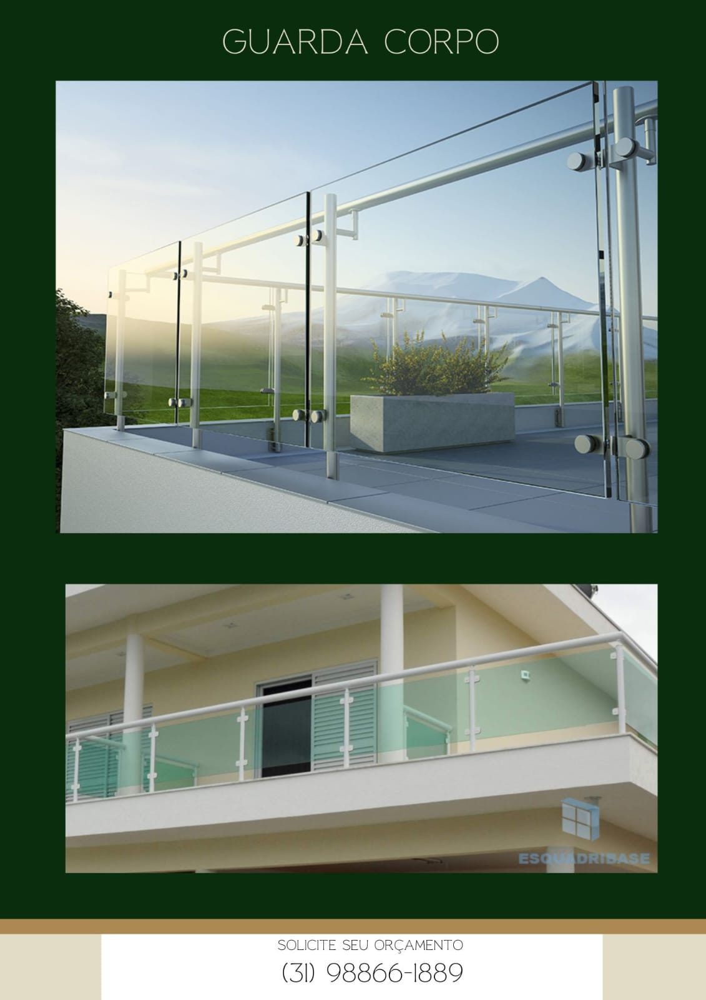
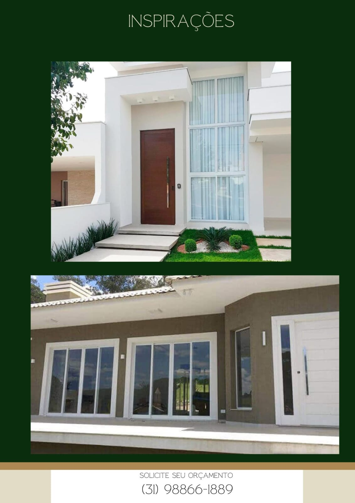
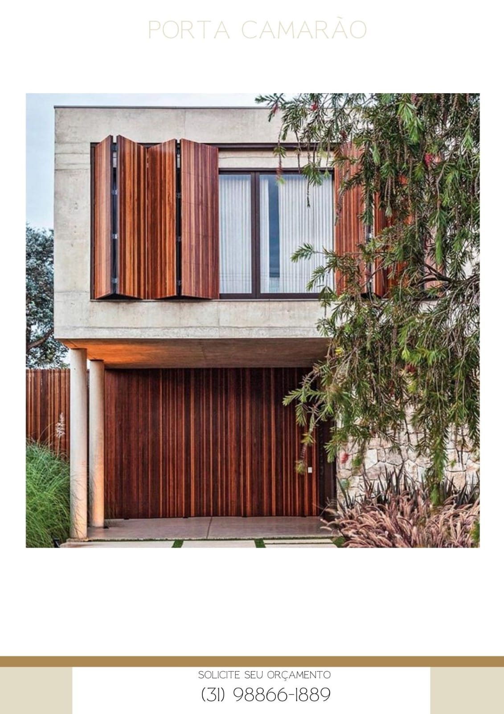

Belo Horizonte e regiao
Esquadrias de aluminio e vidracaria com acabamento de alto padrao
Atendimento em Venda Nova, Justinopolis, Leticia, Santa Monica e toda a Grande BH com solucoes sob medida para casas, fachadas e ambientes comerciais.
Projetos sob medida
Atendimento em BH e regiao
Acabamento premium



Atendimento rapido
Resposta para orcamentos com foco em agilidade e clareza.
Visual sofisticado
Solucoes que valorizam fachada, iluminacao e acabamento.
Instalacao cuidadosa
Execucao pensada para durabilidade, seguranca e limpeza.
Sobre a empresa
Projetos duraveis, elegantes e pensados para valorizar o seu imovel
Atendimento proximo
Acompanhamento desde a medicao ate a entrega, com foco em prazo, acabamento e comunicacao clara.
Materiais de confianca
Trabalhamos com aluminio, vidro e ferragens escolhidos para unir beleza, seguranca e longa vida util.
Solucoes sob medida
Cada projeto e pensado para a necessidade do cliente, seja residencial, comercial ou reforma.
Nossas solucoes
Servicos que unem sofisticacao, seguranca e funcionalidade
Portas ripadas
Aluminio amadeirado com visual moderno e excelente resistencia para fachadas.
Esquadrias de aluminio
Linhas residenciais e comerciais com vedacao, elegancia e otimo acabamento.
Vidros temperados
Box, janelas, portas, guarda-corpos e divisorias com seguranca e estilo.
Portfolio
Fotos e videos de trabalhos reais
Porta camarao e fachada ripada
Projeto com presenca forte para entrada residencial e acabamento elegante.
Portas e janelas de vidro
Mais luminosidade, leveza visual e integracao entre ambientes.
Janela de vidro temperado
Solucao para fachadas e ambientes que pedem resistencia e visual limpo.
Videos
Movimento, acabamento e detalhes de perto
Video de instalacao
Registro em obra para mostrar encaixe, acabamento e presenca do material.
Video de projeto finalizado
Vista mais proxima para valorizar transparencia, ferragens e acabamento.